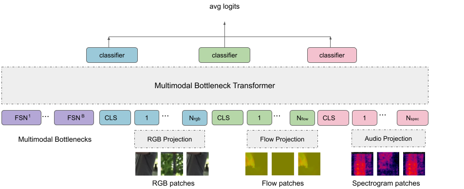

We provide the following additional visualisations and figures: (1) Attention heatmaps on audioset, (2) A diagram of MBT applied to three modalities -- RGB, flow and spectrograms and (3) A histogram of samples in the Audioset-500K split.
1. Attention Maps on Audioset Inputs. We compute maps of the attention from the output CLS tokens to the RGB image input space for a vanilla self-attention model and MBT. For each video clip, we show the original middle frame on the left with the ground truth labels overlayed at the bottom. The attention is particularly focused on sound source regions in the video that contain motion, eg. the fingertips on the piano, the hands on the string instrument, faces of humans. The bottlenecks in MBT further force the attention to be localised to smaller regions of the images (i.e the mouth of the baby on the top left and the mouth of the woman singing on the bottom right). For cases where the sounding object is localised to a narrow region of the image clearly (bottom row), the differences between vanilla fusion and MBT are less apparent.
We also compute maps of the attention from the output CLS tokens to the spectrogram input space for a vanilla self-attention model and MBT. The entire 8 second spectrogram is shown here.
2. Diagram of MBT with three modalities. We shown an extension of MBT applied to RGB frames, optical flow and spectrograms.
3. Histogram of labels in Audioset-500K. Number of samples is plotted on a log (base10) scale.